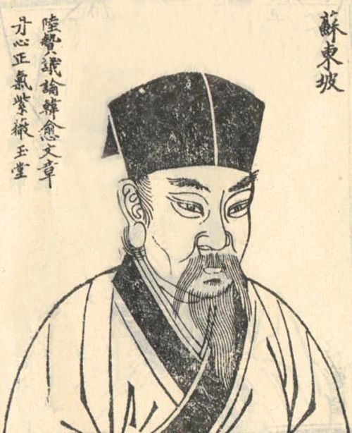

苏轼（1037年—1101年），字子瞻，又字和仲，号铁冠道人、东坡居士，世称苏东坡。眉州眉山（今四川省眉山市）人，北宋文学家，书法家、画家，历史治水名人。与父苏洵、弟苏辙三人并称“三苏”。
苏轼是北宋中期文坛领袖，在诗、词、文、书、画等方面取得很高成就。其诗题材广阔，清新豪健，善用夸张比喻，独具风格，与黄庭坚并称“苏黄”；其词开豪放一派，与辛弃疾同是豪放派代表，并称“苏辛”；其文著述宏富，纵横恣肆，豪放自如，与欧阳修并称“欧苏”，与韩愈、柳宗元、欧阳修、苏洵、苏辙、王安石、曾巩合称“唐宋八大家”；善书法，与黄庭坚、米芾、蔡襄合称“宋四家”；擅长文人画，尤擅墨竹、怪石、枯木等。

明月几时有？把酒问青天。不知天上宫阙，今夕是何年。我欲乘风归去，又恐琼楼玉宇，高处不胜寒。起舞弄清影，何似在人间。
转朱阁，低绮户，照无眠。不应有恨，何事长向别时圆？人有悲欢离合，月有阴晴圆缺，此事古难全。但愿人长久，千里共婵娟。
大江东去，浪淘尽，千古风流人物。故垒西边，人道是：三国周郎赤壁。乱石穿空，惊涛拍岸，卷起千堆雪。江山如画，一时多少豪杰。
遥想公瑾当年，小乔初嫁了，雄姿英发。羽扇纶巾，谈笑间，樯橹灰飞烟灭。故国神游，多情应笑我，早生华发。人生如梦，一尊还酹江月。
老夫聊发少年狂，左牵黄，右擎苍，锦帽貂裘，千骑卷平冈。为报倾城随太守，亲射虎，看孙郎。
酒酣胸胆尚开张，鬓微霜，又何妨？持节云中，何日遣冯唐？会挽雕弓如满月，西北望，射天狼。
© 版权所有 someone@263.net